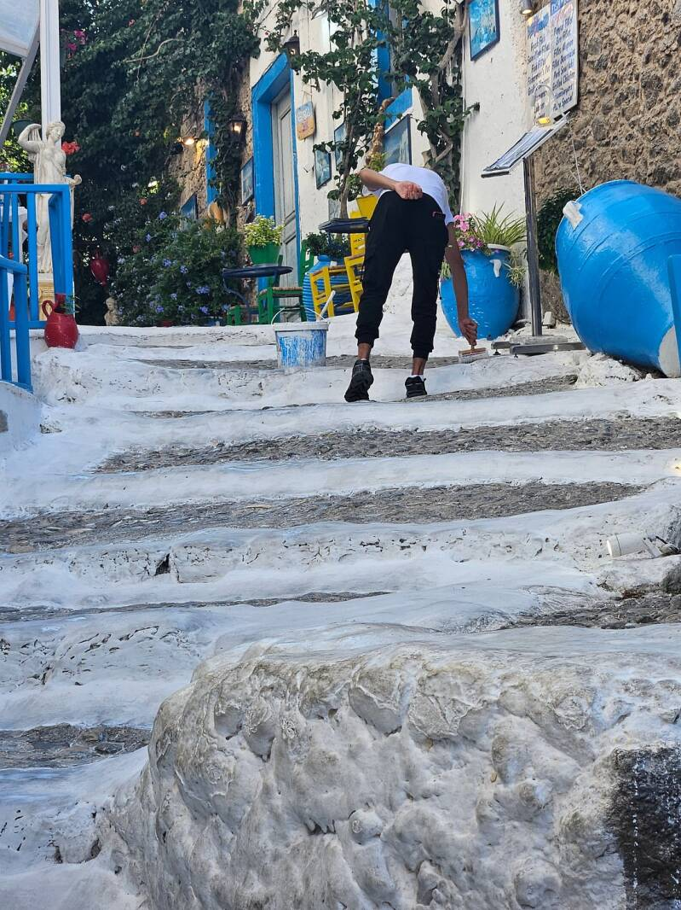

De Witte Trappen in het hart van Kos-stad zijn een van de meest gefotografeerde plekken op het eiland. Met hun schitterende blauw-witte kleuren stralen ze de typische Griekse charme uit.
Ze leiden naar de achterzijde van het gebouw en vormen de iconische toegang tot het populaire restaurant aan de trap – dé achtergrond voor je vakantiefoto.

De trappen worden elke dag opnieuw wit geschilderd
Wat je ziet
De witte verf op de treden wordt maar liefst drie keer per dag aangebracht. Zo blijft de stralende, constante witte kleur behouden – precies die look die zo kenmerkend is voor de Griekse eilanden.
Goed om te weten
Midden in Kos-stad, dicht bij de haven en de winkelstraten. Geen openingstijden: het is een openbare doorgang.